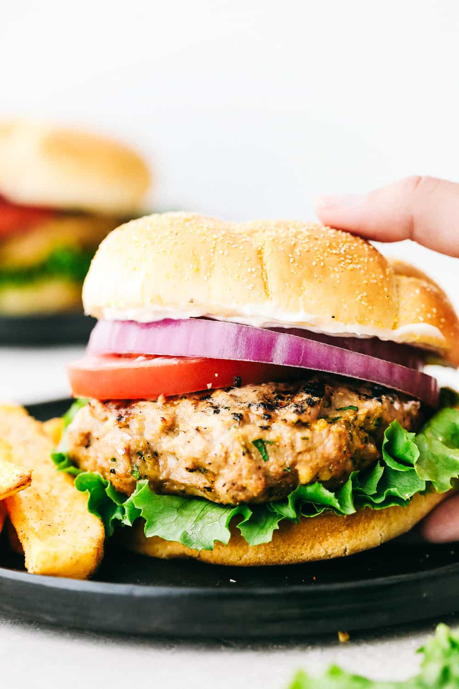

Brian's Famous Turkey Burgers

Description
Have you always thought of turkey burgers as bland, dry, flavorless garbage food? Well let me be the first to change your mind.
This recipe can show you how to make juicy, flavorful, tasty poultry plate pleasers!
People will like them so much they will ask for this delicacy unprompted.
Your friends won't just say these burgers are good because they are nice and being polite. They will actually crave them.
Ingredients
- 1 lb of ground turkey
- 1 white onion
- 1 red bell pepper
- 1 tbsp of garlic salt
- 1 tsp of Lawry's seasoning salt
- 1 tsp dill weed
- 1 tsp black pepper
- Crushed red pepper 1 tsp - 1 tbsp or more (amount depends on preferred lever of spiciness)
- hamburger buns
Steps
- Finely chop half a white onion and half a red bell pepper.
- Put pound of ground turkey in mixing bowl.
- Add chopped onions and chopped bell pepper into turkey meat. Meld together (I use my hands to combine ingredients).
- Add dry ingredients. Meld together with hands again. Mold into a ball.
- Make patties out of meat. Portion out about 2/3 cup of meat per patty (should make about 4 patties).
- Cook on grill or pan on stove (add oil to pan) at medium heat until surface is slightly brown and burgers are cooked through.
- At the end of grilling, add bacon and/or cheese if desired. Let cheese get melty.
- Add turkey burgers to buns and add desired burger condiments and veggies.
- Enjoy!